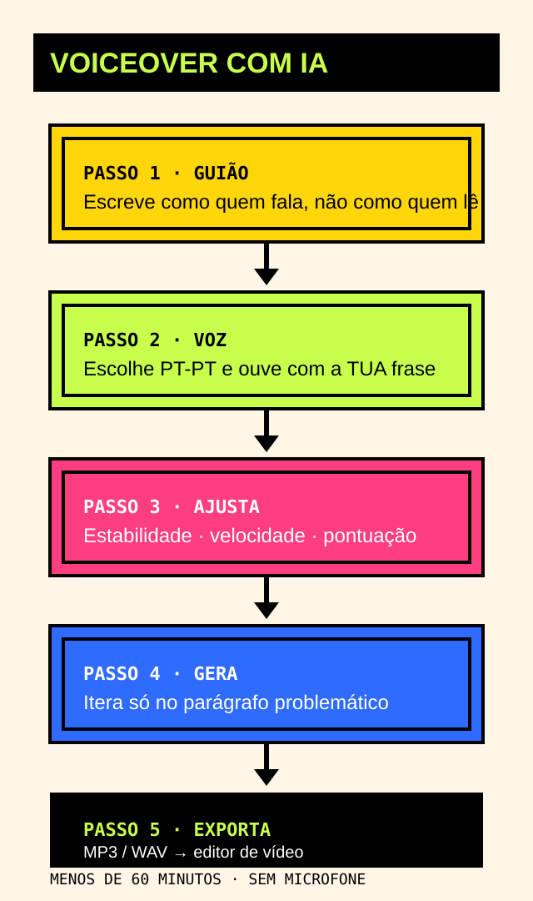

AI voiceover, step by step
⚖️ This guide contains affiliate links — see our policy.Narrating a video is what separates amateur content from content that looks professional. But not everyone has a broadcaster's voice, or time for ten takes until it sounds right. With today's tools, you can make an AI voiceover in under an hour. Here's the process I use, from zero.

What you need
- A free ElevenLabs account (10k credits a month is enough to start)
- Your script, 300 to 500 words is a good starting point
- Ten minutes of attention
Step 1 — Write the script the way you'd speak
AI reads text written to be spoken better than text written to be read. Short sentences, few subordinate clauses, pauses marked by commas. Read it out loud: if you run out of breath, cut it down.
Step 2 — Pick the right voice
In ElevenLabs, open the Text to Speech tab and explore the voices. Look for the ones marked Portuguese (Portugal). And always listen to two or three voices with the same sentence before deciding. Your sentence, not their demo.
Step 3 — Adjust the settings
- Stability: higher gives a consistent voice, lower gives more expressiveness and more risk.
- Similarity: controls how faithful the voice is to the original.
- Speed: 1.0 is the natural pace. Bump it to 1.1 for faster-paced videos.
Step 4 — Generate and iterate
Generate the audio and listen from start to finish. Expect two or three attempts: adjust Stability, move a comma, regenerate only the problem paragraph. Don't regenerate the whole text every time, that burns credits for nothing.
Step 5 — Export and sync
Export as MP3 or WAV. In your video editor, CapCut, DaVinci or Premiere, import the audio and cut the video to the narration. Result: professional narration without a microphone.
Common mistakes (and how to avoid them)
- A written script instead of a spoken one: the AI reads overly formal text without emotion.
- Mixing PT and BR voices: pick one and keep it for the whole video.
- Ignoring punctuation: full stops and dashes control the pauses. Use them.
Ready to try it?
Create your free ElevenLabs account and make your first voiceover today. If you upgrade, supporting this site costs you nothing extra.
Create a free account →Disclosure: this guide uses affiliate links. They never change the price you pay.